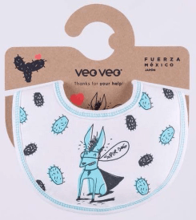

Story1
復興支援の「応援買い」
「東日本大震災」の2か月後に開催された「緊急 幕チャリ」を機に、東北物産の直販を始め、「応援買い」を呼びかけてきた。復興には被災地の地元産業が再稼働し、人々の生活が再建されることが必須で、「応援買い」はその長期的な復興過程への継続支援となると考えたからである。

だから、「応援買い」はその後も継続してきた。毎年の「幕チャリ」に「復興支援応援買いコーナー」を設け、 には学園祭でも展開し、「応援買い」は福島県、宮城県、岩手県の物産へと広がることになった。
「マッチング寄付」の工夫もおこなった。石巻元気復興センターの「牛タン入りつくね」を実演販売し、購買者と和田ゼミ社会起業研究会とで寄付金をマッチさせるもので、まず食べてもらうことで「つくね」のファンを広げ、同時に、マッチングで集まった寄付金をネパール地震や熊本地震への緊急支援とするためである。
Story2
海を越える共鳴


、メキシコを大地震が襲った。和田ゼミ社会起業研究会では、メキシコ在住のOGから呼びかけに応えて、メキシコでデザイン・製作されたオリジナルのスタイを学園祭で販売し、復興支援として収益をメキシコに寄付した。


デザイン・製作：VEOVEO
コーディネーター：板谷桜子(OG)
スタイは弱い立場に置かれた人々への愛を象徴し、メキシコで団結のシンボルとなった「救助犬ショロ」と、苦難に負けない愛を示す「サボテン」の2種類がデザインされ、特に日本向けにデザインされた「サボテン」には「FUERZA MEXICO！ メキシコに力を！」のメッセージが加えられた。
の東日本大震災の際、メキシコ在住のOGを含む日本人とメキシコ人の有志がオリジナルTシャツ「ANIMO JAPON! 頑張れ日本！」を制作し、3,000枚以上を販売した売上げに募金を加えた約280,000ペソ（約230万円）が日本赤十字社に寄付された。今回のメキシコ復興支援は、その時に示された「日本の被災者を思うメキシコの人々の気持ち」への恩返しであった。
また、同時に、「ANIMO MEXICO！ 頑張れメキシコ！」の図柄を自らTシャツにプリントすることで支援の気持ちを共有し、売上げをメキシコに寄付することも行った。
海を越えて、「くいすぐっず」を制作してきた経験と復興を支援しようとの想いが共有され、共鳴するムーブメントとなった。
海を越えて、「くいすぐっず」を制作してきた経験と復興を支援しようとの想いが共有され、共鳴するムーブメントとなった。
Story3
自助・共助・公助
防災と備蓄の必要性が言われ続けて久しい。だが、なかなか実行されないことが多く、結局は他人頼みである。しかし、現実に起こった大災害で痛感させられたのは、「まず自力で生き延び、そして互いに助け合う」という大原則であった。どこまでも「自助・共助・公助」の順なのである。
そのことを徹底するため、和田ゼミ社会起業研究会では東日本大震災の直後から防災プロジェクトを始動させ、日々の生活の見直しを進めてきた。その一環として、には大学と共同で「大規模地震対応マニュアル」を編纂、デザインし、毎年、大学から全学に配布されるようになった。日頃から学生が携帯し、万が一の際には的確に行動できるようにするためである。

構成：宍戸優美・門馬彩乃 / デザイン：越後茜
加えて、「備えていますか？」パネルを作成し、サバイバルと備蓄の重要性の啓発にも力を入れてきた。特に、いつも持ち歩くべき「防災携帯ポーチ」の普及をめざし、学生の限られた資金力でも賄える工夫が続いている。

PDF デザイン：大槻花菜